Email Us
Please send us an email, we would love to hear from you!

“Give me yak shit”. Not a sentence I expected to ever be said to me, but now it happened I should probably just comply. I lean over, grable inside the big bag of yak dung next to me, and hand over a few dried brittle plaques, each about as big as my head. Those yaks know how to poop! These domesticated oxes are not that big and seem to consist mainly of hair, but that doesn’t seem to get in the way of their digestive system. We’ve seen them on the trail, and also people collecting their dung and putting them on rocks and roof tops to dry. It’s November in Nepal, a period known for its dry weather and good for trekking, exactly what we are doing.
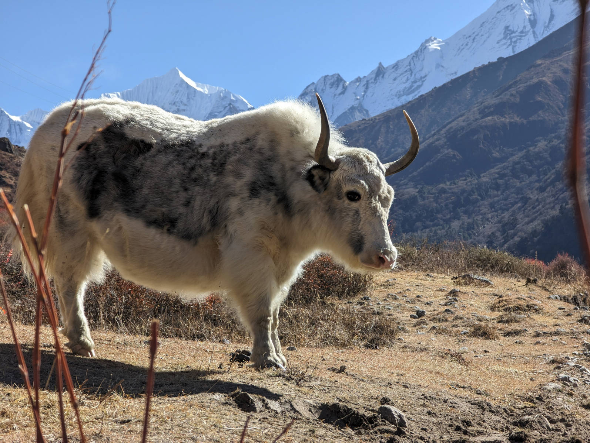
I’m sitting hurdled in the kitchen of a tea house in Langtang village, a village at about 3200 metre in the Langtang valley. It’s morning, the temperature inside and outside is probably around 0. Last night the stove in the sitting area where we have our meals was on, but since we’ll just have breakfast and then go, and there are no other guests, we just join in the kitchen where the stove on which our breakfast and tea is being prepared provides a nice warm glow.
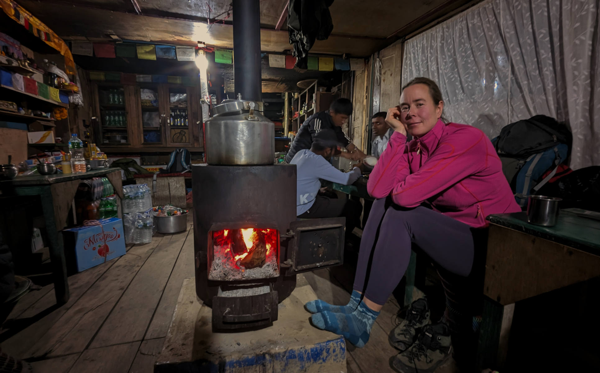
My breakfast usually consisted of a bowl of tsampa porridge. Tsampa is made from whole barley cereal grains, which can be produced well above 3000 metres. To make tsampa, the barley gets roasted over fire and then stone ground into a coarse flour. It is the food of the Tibetan people, and we’re only some 7 km away from Tibet.
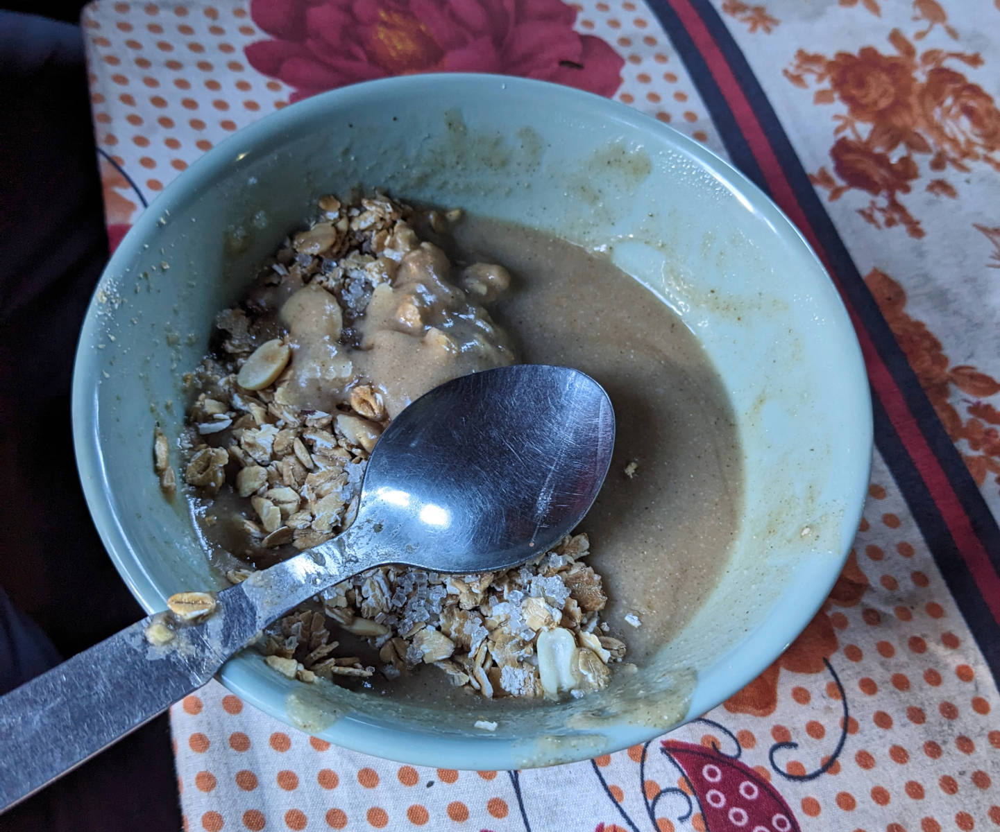
The food and culture of the Langtang valley are highly influenced by Tibet, which is very interesting to us. The local inhabitants refer to each other as 'Langtangpa'. They generally follow Tibetan Buddhism, and speak a Tibetan language that is closely related to the Tibetan spoken in Kyirong from southern Tibet.
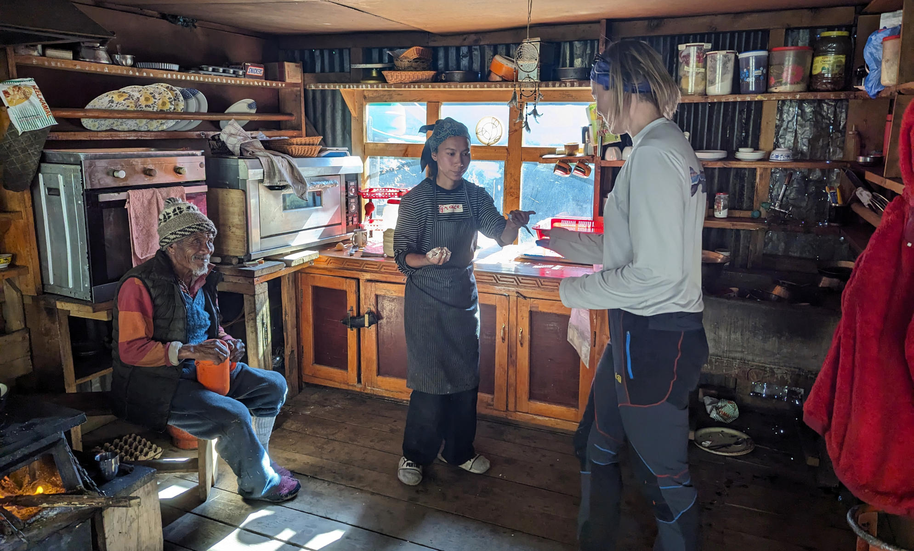
Sadly, another fact about Langtang valley needs to be told. Langtang Valley was severely affected by the 2015 earthquake. Among the 9,000 death casualties of the earthquake in Nepal, 243 people died in the small village in the Langtang Valley. This includes 175 villagers, 27 local tourism staff (guides and porters), and 41 foreign trekkers. Prior to the 2015 earthquake, 668 individuals were estimated to be living within all villages in the valley, which provides insight into the scale of the disaster for this community. A big landslide covered the village about 10 meters deep with rubble. We walked over this landslide site to get to the new village, which is resurrected slightly further into the valley. Every inhabitant lost friends and family in this tragedy. They’ve picked themselves up and we are now staying with one of the survivors in a new house at the new site.
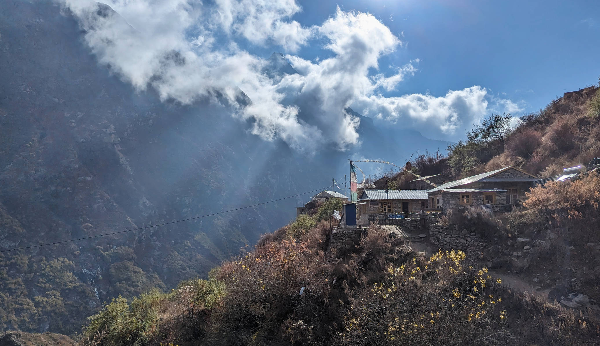
A few days earlier we also stayed in Langtang Valley, on our way up to Kyanjin Gompa, the traditional Buddhist heritage site at 3800 metre, our destination, and the highest place we would sleep. It’s just a couple of hours to do this part of the trekking and we took our time. A Buddhist stupa and at least 400 years old monastery were located just before Kyanjin Gompa, and not only were these very interesting, they provided excellent photo opportunities.
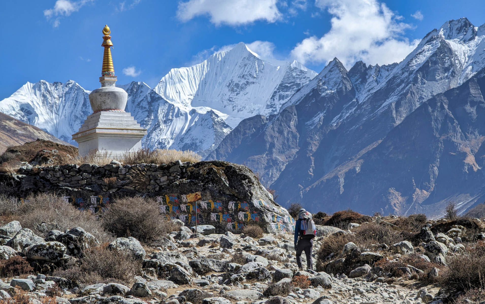
From the monastery came sounds, and Leigh had a peek through the door of the walled garden to find ladies from both Langtang Valley and Kyanjin Gompa chiming Buddhist chants in stone plaques.
We had seen these stone plaques everywhere around the valley, and were later told by the ladies that the machine made ones were no good, the hand made ones much better.
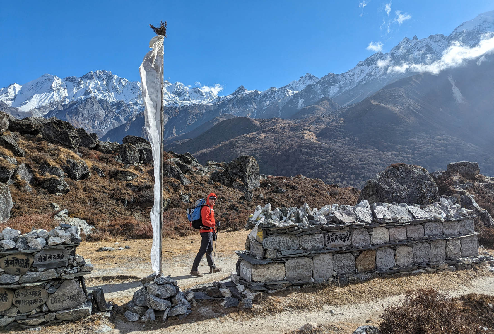
A Buddhist monk offered us some food and a cup of tea, and it didn’t take long for the Nepalese women to put us to work. When their tools got dull, they would give them to us, so that we could sharpen them up again. It wasn’t exactly clear to Leigh what his task was, and he thought his job was to flatten his stone with a pick. It wasn’t until more women threw their tools and his first patron came back to take her tool back that the job became clear - sharpen the picks and return them! Periodically, monks would come by with tea to offer to the woman and us, and we took a welcome break. We stayed there for a good hour, it was nice and warm in the sun, the walls around the garden broke the wind, and the white peaks of mountains and glaciers glistered all around us, so high that they could be seen above the wall. Nepalese men would come in carrying more stones. The stones come from far and they carry them all the way in on their back, with a headband holding them up. These people are so strong! The women spend hours chiming before going home with blistered hands and a smile on their faces.
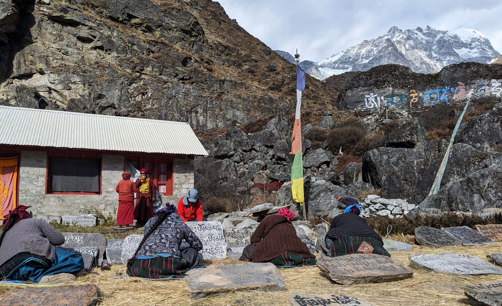
We still hadn’t made it to Kyanjin Gompa, and it was time to walk the last stretch. One of the women had just finished her stone and walked back with us, she couldn’t resist a dance with Leigh on the bridge just before the village.
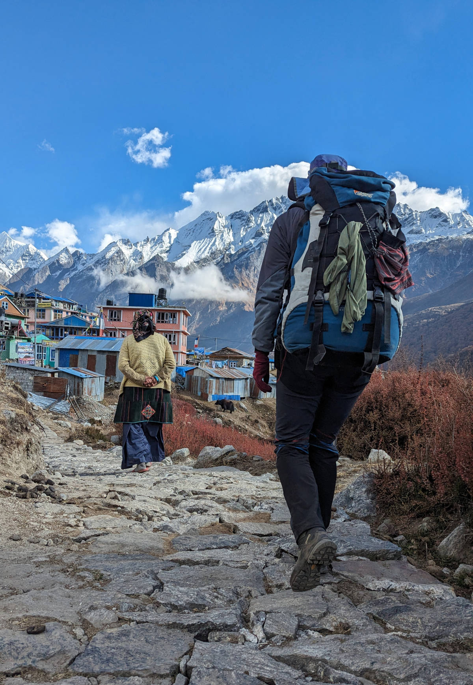
It was amazing seeing the village for the first time. Little Tibet! It just appeared out of nowhere after climbing over some rocks. The Lonely Planet referred to it as New Yak City (a play of words on New York).
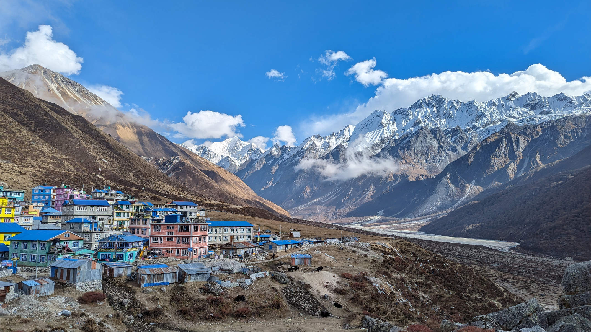
We ended up staying with the stonemason women in her tea house, the only other guests were 2 other Canadians, and had a wonderful time. The place had amazing views and there was tsampa porridge for breakfast, and yaks all around, what else does one need.
It was also the place where we drank Sea Buckthorn juice for the first time, juice made from a berry that is collected in November. Very sweet, yummy and apparently full of vitamin C and antioxidants.
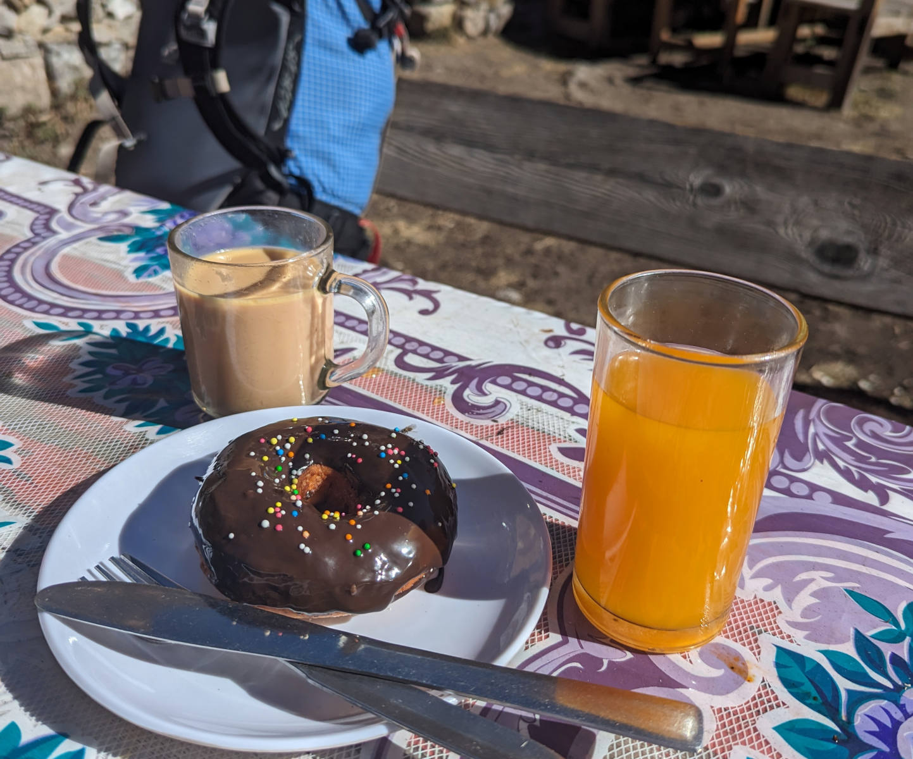
We also enjoyed the local yak cheese. Swiss cheese-making was introduced in Langtang in the 1950s by Werner Schulthess, and has become a popular and delicious product of Langtang. If bought at the site of production, government rates ensure premium prices. That’s not all Kyanjing Gomba has to offer, there are also coffee houses with fresh croissants (but not this time of year, it’s too cold for dough to rise overnight), doughnuts and carrot cake. Many trails can be followed to nearby peaks, of which Kyanjing Ri at 4773m has amazing views at the glacier behind Kyanjing Gomba, and around the valley.
The langtang valley is a national park, known for its red panda’s (in the bamboo forests) and snow leopards. And so I imagined, while walking around this amazing remote place, that snow leopards were watching us. But seeing a really big bird gliding to the sky was a reality. Would that be the Lammergeier, who is the only known vertebrate whose diet consists of 70–90% bone? So special to be here.
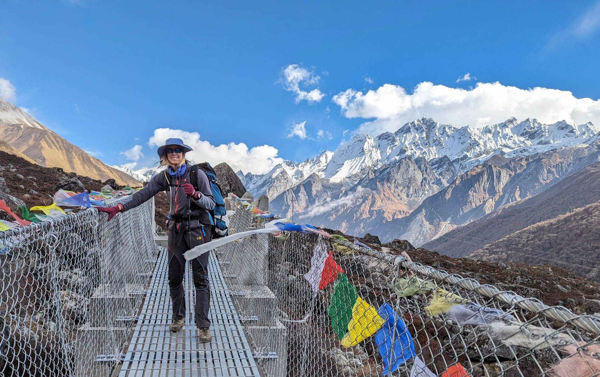
However, it was time to go back. First goal was the tree line.
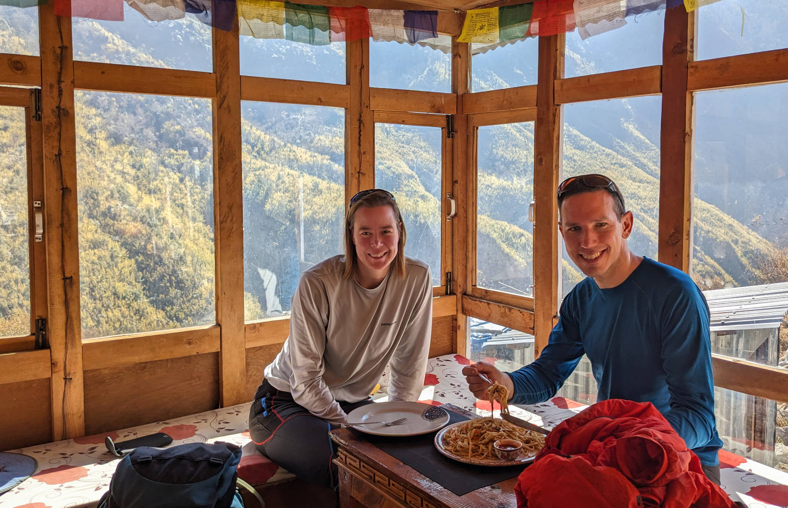
One thing to look out for on the trails were the mule trains. The mules can easily bump you out of their way, so it's key to be on the inside of the mountain as we pass. You can hear them coming, they move with bells on. The mule trains are the main method of goods transportation. They usually go up the mountain fully loaded, and down half empty, such as in the video below. It is amazing that they can handle this terrain so well.
As altitude gave way to foliage, we looked out for red pandas in the bamboo forests, though they seem as elusive as the snow leopard: a study from 1991 estimated there only being 24 panda’s in Langtang. In the end we didn’t see any red pandas or snow leopards, but we so much enjoyed our time with the friendly Nepalese people, mule trains, fellow trekkers, animals, views, and everything else that this amazing Langtang valley had to offer.
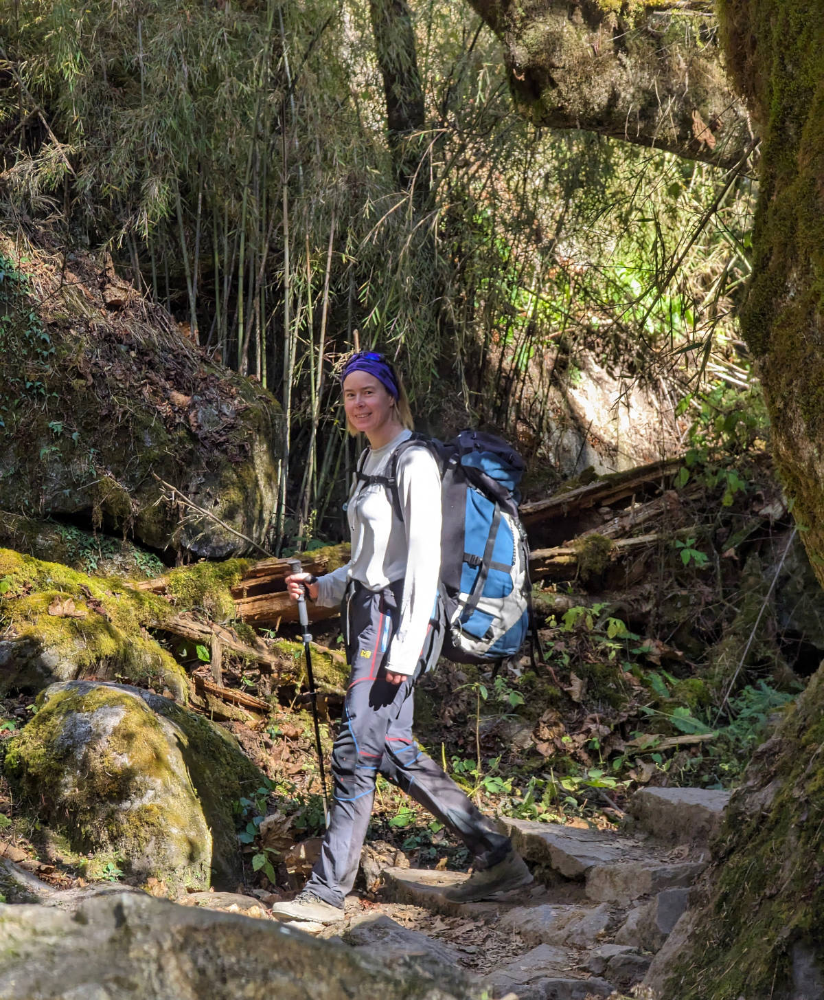
Our trail followed the mighty Langtang Khola river where we passed many tea houses. We never had problems finding a room for the two of us, helped probably by being a bit late in the season. We still met many other trekkers, both foreign and Nepali. Especially on the way up we kept on running into the same people because we all followed the same trail, and day distences ended up being fairly similar. Only at the top did the houses have electricity because of a hydro scheme. Further down they relied on solar power, which was not great for the houses further down enclosed by mountains, some would only get an hour of sunlight a day.
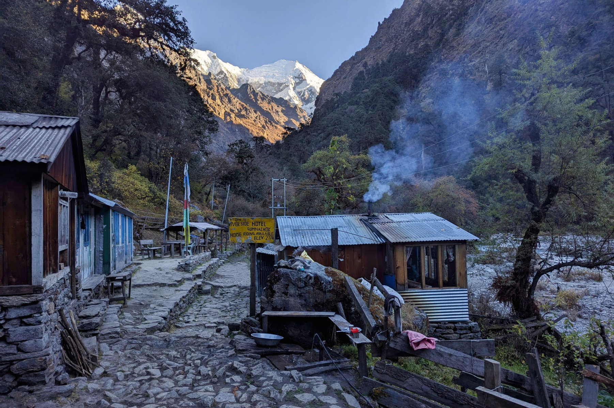
Our final destination was Suyabrubesi from where we would have a gruelling 7 hour busride back to Kathmandu. For the first part of the journey the bus follows the Trishuli river on a road that, despite being a main road that connects Kathmandu to a border crossing into Tibet, is mostly unpaved with massive potholes and steep drops into far away ravines. But, this road provided also amazing views to terrassed mountain sides covered with villages. An amazing part of the world
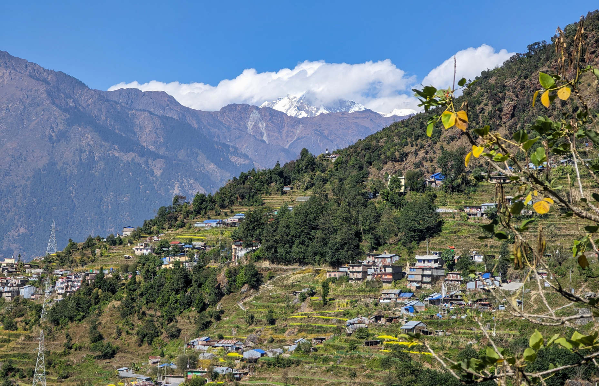
Please send us an email, we would love to hear from you!